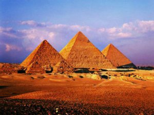

Xeops ehramı — qədimdə "dünyanın yeddi möcüzəsi"ndən biri sayılırdıpiramidaların daşları təxminən 2 ton ağırlığında olduğu hesab edilir və bu möhtəşəm piramidaları keçmişdə tikmək çətin olduğu üçün piramidaları "Dünyanın yeddi möcüzəsi"ndən biri kimi qələmə almışlar. Xeops ehramının tikintisinə hər biri 2,5 ton olan 2 300 000 ədəd daş sərf olunmuşdur. İlk piramida firon Coserə məxsus olmuşdur.
